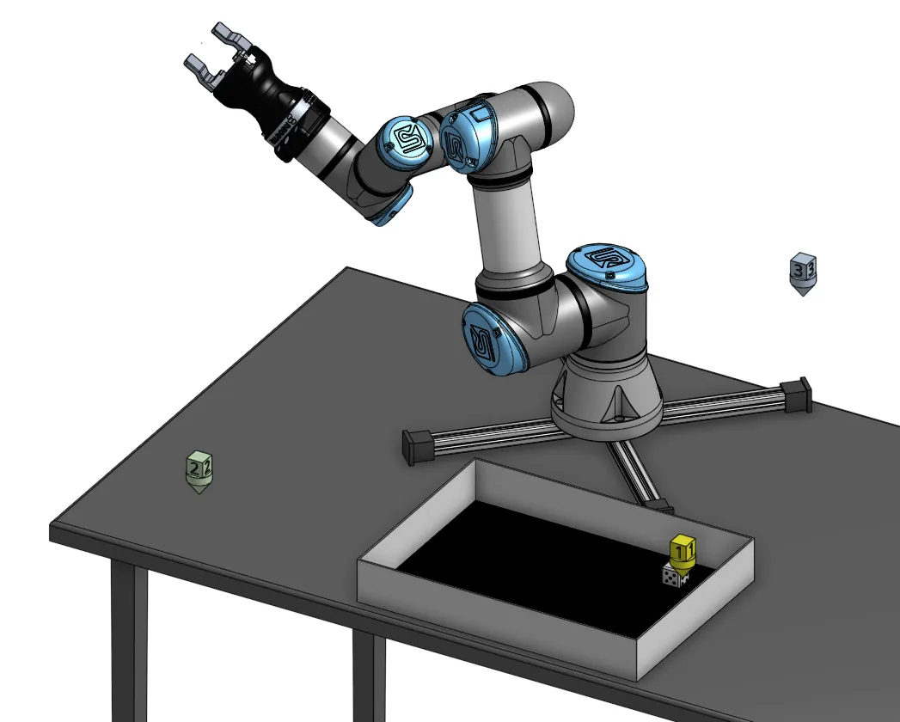
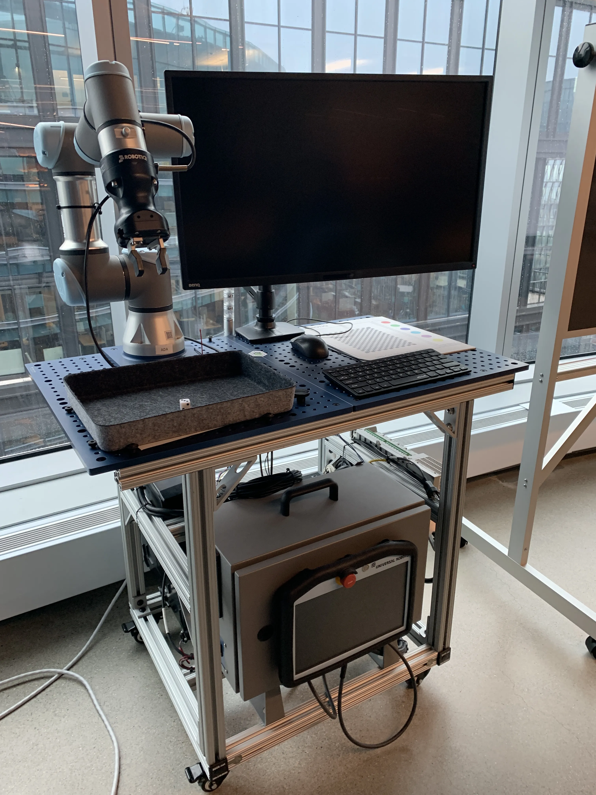

Industry 4.0 / Smart Manufacturing
Over six years co-directing the education programs at PTC, I
worked with industry, government and academic thought leaders creating industrial and
educational systems
leveraging smart and interconnected "Industry 4.0" technologies and platforms.
Many of those projects involved using PTC's augmented reality platform, Vuforia, combined with
their Industrial Internet of Things platform, Thingworx, to create real-time, bi-directional
digital twins. We used a Universal Robotics UR3 and
Allen-Bradley Programmable Logic Controllers (PLCs) and created demonstrations to help thought
leading faculty understand how they could incorporate these tools into their classes.
I've collaborated with and advised dozens of engineering faculty globally, exploring the principles, concepts and technologies involved with smart manufacturing and Industry 4.0. One of the larger projects I helped with is the Smart Factory at Purdue Polytechnic Institute.
Beginning in 2019, I worked closely with the Purdue polytechnic faculty, technical staff and administration to help them conceptualize, design and realize a Smart Learning Factory for their undergraduate students, introducing them to the concepts of digital engineering. I also provided a framework and outline for their Smart Manufacturing curriculum.
Onshape-based CAD Digital Twins
PTC portfolio using open-course platforms. We were lucky to have a Universal Robotics UR3 collaborative robot for a lot of our testing, but for the digital twin creation, systems PTC portfolio using open-course platforms. We were lucky to have a Universal rRobotics UR3 collaborative robot for a lot of our testing, but for the digital twin creation, systems integration and visualization, we used Python with Google Colab and Onshape, which both have free options and are widely available.


With these and other low-cost edge hardware platforms, we were able to create
bi-directional near-real
time CAD digital twins, for example, using waypoints defined in an Onshape CAD document to
drive the motion of the robot.
The configurable Onshape document is public, as is the Google Colab Python to communicate with the robot, included in the
PTC Education API Playground, developed by my team at PTC.
PLC controlled Lego SPIKE Prime
This short video shows how we were using a Rockwell Automation Allen-Bradley PLC integrated into a small, portable demonstration platform. I wrote ladder logic in the PLC to control the attached, light array. Using a prototype spatial computing platform, Vuforia Spatial Toolbox, I connected to the Lego spike prime over Bluetooth, and could control its motion using the parameters coming from the PLC. When the light was green the vehicle would go, for yellow it would go at half speed, and when red it would stop.
 The camera pans out to show the view of an iPad, which was running an AR experience at the
same time. In the
augmented reality experience, there is a AR stop light on a lamp post, which is also
connected to the data
from the PLC through thing works and updates in real time. Note that the thing works
instance used in this
demonstration was hosted in the cloud, so the PLC is sending the state of the system to the
cloud, which is
then coming back to the iPad. When the light turns from yellow to red, you can see a small
delay between the
actual lights on the PLC demonstrator versus the AR traffic light due to that added
complexity.
The camera pans out to show the view of an iPad, which was running an AR experience at the
same time. In the
augmented reality experience, there is a AR stop light on a lamp post, which is also
connected to the data
from the PLC through thing works and updates in real time. Note that the thing works
instance used in this
demonstration was hosted in the cloud, so the PLC is sending the state of the system to the
cloud, which is
then coming back to the iPad. When the light turns from yellow to red, you can see a small
delay between the
actual lights on the PLC demonstrator versus the AR traffic light due to that added
complexity.
On the left side of the screen of the IOT demonstrator shows Rockwell Automation's Emulate 3D, where we also imported a 3-D model of the light post and we're able to animate it in real time as part of their automation software, and the right side of the screen shows a simple Thingworx 'mashup' or dashboard, with a 2D digital twin of the traffic light.
 The video at right shows the same I4.0 demonstrator and program running, but in this case,
the data is being
sent to Onshape to animate a CAD model in near-real-time. The demonstration leverages REST
API protocol, which
isn't meant for real time processing, and generally includes approximately a one second
delay.
The video at right shows the same I4.0 demonstrator and program running, but in this case,
the data is being
sent to Onshape to animate a CAD model in near-real-time. The demonstration leverages REST
API protocol, which
isn't meant for real time processing, and generally includes approximately a one second
delay.
 Both at BU and PTC, I bought and
used Universal Robots. At PTC we used the UR-3 to create several
demonstrations and examples of how to integrate with PTC technologies like augmented reality
to help factory workers improve quality and productivity.
Both at BU and PTC, I bought and
used Universal Robots. At PTC we used the UR-3 to create several
demonstrations and examples of how to integrate with PTC technologies like augmented reality
to help factory workers improve quality and productivity.
Universal Robot Mini-Digital Engineering Lab
One of the most useful
examples I created was a re-creation of a demonstration I first built at Boston University,
where
the robot rolls a die, a vision system locates the die, picks it up, counts the number on
the
top face and stores that in a database, then rolls the die again and again. AT PTC I built a
portable cart for the robot, which allowed us to move this demonstration to conference
rooms.
This was a great way to generate a large data set, end
of the results of the day could be used to trigger different events in a more complex
demonstration system.
LEGO for Manufacturing
 Universal robots are easy to use, affordable and relatively safe. For even lower budget
solutions, I like to use LEGO as a way to apply some of the same principles.
Universal robots are easy to use, affordable and relatively safe. For even lower budget
solutions, I like to use LEGO as a way to apply some of the same principles.
I also created a small
version of the classic "Let's Make a Deal" Plinko game, as a way to try to generate a large
data set with a repeatable
process with some variation. The Lego elevator would drop the disc, which could fall into
either the left or
right channel, which was recorded and stored. An example of natural variation in a
manufacturing system.
 This LEGO robot is another simple example of a closed-loop manufacturing system with state-based control and a vision system.
In creating any kind of manufacturing demonstration system, a challenge is to build it to be good enough to generate lots of data, and bad enough so that there is enough variation between operations to approxiomate reality.
This LEGO robot is another simple example of a closed-loop manufacturing system with state-based control and a vision system.
In creating any kind of manufacturing demonstration system, a challenge is to build it to be good enough to generate lots of data, and bad enough so that there is enough variation between operations to approxiomate reality.